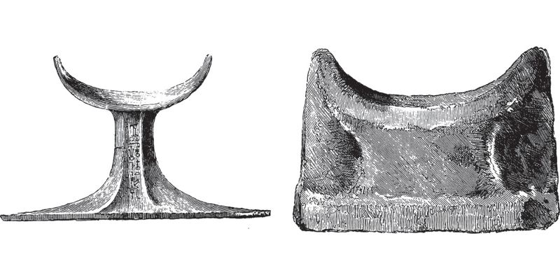
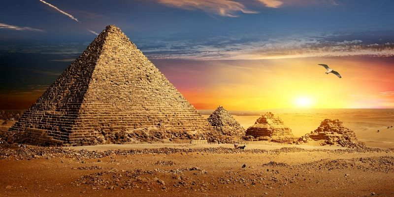
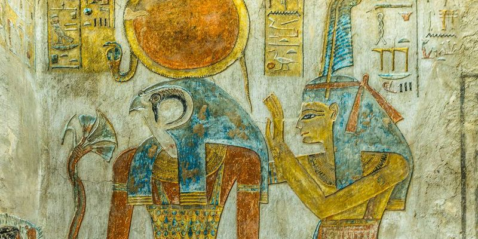

La pyramide de Khéops, ou grande pyramide de Gizeh, est un monument construit par les Égyptiens de l'Antiquité, formant une pyramide à base carrée. Tombeau présumé du souverain Khéops, elle fut édifiée il y a plus de 4 500 ans, sous la IVe dynastie1, au centre du complexe funéraire de Khéops qui se situe à Gizeh en Égypte. C'est la plus grande des pyramides de Gizeh. Elle fut considérée dans l'Antiquité comme la première des Sept Merveilles du monde. C'est la seule de ces sept merveilles à avoir survécu jusqu'à nos jours, et également la plus ancienne. Durant des millénaires, elle fut la construction humaine de tous les records : la plus haute, la plus volumineuse et la plus massive.
La pyramide de Khéphren est la deuxième pyramide d'Égypte en taille. Dominant un complexe composé de deux temples reliés par une chaussée et d'une pyramide satellite, elle est de type à faces lisses et fut élevée sous la IVe dynastie durant l'Ancien Empire pour le pharaon Khéphren, fils de Khéops. Elle se dresse sur le plateau de Gizeh au sud-ouest de celle de son père. Elle est sans doute la plus facile à reconnaître car son sommet est encore couvert de calcaire. Légèrement plus petite que celle de Khéops, elle paraît pourtant plus haute car érigée sur une proéminence rocheuse avec un angle d'inclinaison supérieur à celui de la Grande pyramide. Le temps a également préservé un temple d'accueil dont la sobriété et la composition subtile des matériaux constituent un véritable joyau de l'Ancien Empire.
La pyramide de Mykérinos est la plus petite des trois grandes pyramides du plateau de Gizeh. Elle s'élève à la hauteur de 63 mètres à l'extrémité Sud du plateau, ne représentant qu'un dixième du volume de la plus grande, la pyramide de Khéops. Dominant un complexe composé de deux temples reliés par une chaussée et de trois pyramides satellites, elle est de type à faces lisses et fut élevée sous la IVe dynastie durant l'Ancien Empire pour le pharaon Mykérinos. De nombreux signes d'inachèvement montrent que la mort du souverain intervint au cours de l'édification du monument.
Quelques faits intéréssants sur l'Egypte


